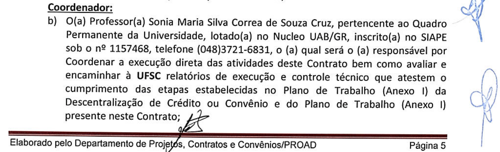

Acórdão do TCU
Construção Arbitrária da Acusação
de
Malversação e desvio das verbas de bolsas Capes
Ouvidos Moucos e a Promiscuidade
TCU,CGU,MP, PF.
Objetivos Originários do TCU
. A presente auditoria teve por objetivo verificar a existência de irregularidades na execução do Sistema Universidade Aberta do Brasil (UAB), no que tange às atuações da Capes, universidades federais e fundações de apoio . A partir do objetivo do trabalho, formularam-se as questões de auditoria abaixo elencadas:
- As bolsas foram concedidas a pessoas elegíveis e pagas com a observância da legislação?
- Há irregularidades no cadastro de alunos matriculados?
- As despesas de custeio realizadas / pagas comprovam a boa e regular aplicação dos recursos?
- A licitação e contratação de terceiros foram processadas de modo a assegurar o caráter competitivo de seus procedimentos?
- A seleção dos bolsistas observou critérios objetivos e os princípios da moralidade, impessoalidade e da publicidade?
Ouvidos Moucos e Mudanças de Objetivos.
- Importante destacar que, após o início da presente fiscalização, a Polícia Federal (PF), com o apoio do TCU e do Ministério da Transparência e Controladoria-Geral da União (CGU), deflagrou no dia 14/9/2017, em Santa Catarina, a operação “Ouvidos Moucos”, buscando desbaratar um esquema criminoso que agia na aplicação de recursos públicos repassados à UFSC para cursos de educação a distância, pertinentes ao Sistema UAB. O TCU foi instado a auxiliar no trabalho, o que foi fundamentado neste processo, TC 023.418/2017-6, de relatoria do ministro Walton Alencar Rodrigues, que autorizou a participação de servidores do TCU nas ações comandadas pela PF.
- ......
- Durante a execução da auditoria, a PF, amparada em decisão da Justiça Federal, compartilhou o acesso aos documentos, pois a maioria da documentação a ser consultada para execução dos trabalhos de campo encontrava-se apreendida na Superintendência Estadual da PF em Santa Catarina. Assim, muitas das peças constantes deste processo são oriundas do inquérito policial, na qualidade de prova emprestada, principalmente depoimentos prestados por servidores da UFSC à PF.
Achados e Ausentes.
Achados!!!
- achado II.1: concessão e pagamento de bolsas pela Capes a pessoas não vinculadas a execução do objeto pactuado no valor total de R$ 3.197.310,00;
- achado II.2: Acumulação indevida de bolsas no sistema UAB no R$ 140.670,00.
- achado II.5: superfaturamento na locação de veículos no montante de R$ 43.201,53.
Critérios tortuosos para inculpar Coordenadores UAB.
- Prova de não realização de atividades: ausência do nome na plataforma digital das disciplinas- Moodle e Catalogo da Graduação.
- Todas as atividade que não sejam docência e ou tutoria são irregulares.
- Todos os projetos no sistema UAB que não são projetos de cursos de graduação são ilegais.
- As bolsas CAPES são exclusivas para atividade tutoria e de professor .
- Define como irregular o pagamento de bolsas através de verbas de custeio.
- A acusação de multiplicidade de bolsas para um mesmo bolsista. Desconhece vários casos que a própria CAPES regulamentou atraves de portarias.
Argumento central do TCU
para culpabilização do Coordenador UAB
Atribuição do Coordenador UAB
Enviar mensalmente à CAPES a lista de bolsistas em atividade
Coordenador UAB coleta os formulários enviados pelos coordenadores de curso atestando atividades dos bolsistas. Registro no SPA-UFSC sem papel
Coordenador envia para registro no SGB a lista de bolsistas aptos a receberem bolsa no mês.
Conclusão do TCU
Coordenador UAB é o ordenador de pagamentos.
Coordenador é o responsável por todos os pagamentos supostamente irregulares.
Argumento central do TCU: Teoria do Domínio do Fato.
78. Com efeito, as certificações dos lotes de pagamento de bolsas via SGB, efetivadas pelos
coordenadores UAB, contemplando pessoas que não possuem os devidos registros nos sistemas
internos da UFSC (controles acadêmicos e/ou moodle) necessários para comprovar a prestação
das atividades inerentes a função da bolsa recebida e/ou atreladas a cursos não realizados e/ou
não vinculados ao Programa UAB, acarretaram pagamento irregular de 2.985 bolsas, totalizando
R$ 3.197.310,00, entre 01/01/2012 a 30/06/2017, em afronta aos arts. 5.º, inciso III, alínea "g", 7.º e.
9.º da Resolução CD/FNDE 26/2009, 3.º, inciso II, alínea “e”, e 4.º da Portaria Capes 183/2016 e 62
e 63 da Lei 4.320/1964.
78. Com efeito, as certificações dos lotes de pagamento de bolsas via SGB, efetivadas pelos coordenadores UAB, contemplando pessoas que não possuem os devidos registros nos sistemas internos da UFSC (controles acadêmicos e/ou moodle) necessários para comprovar a prestação das atividades inerentes a função da bolsa recebida e/ou atreladas a cursos não realizados e/ou não vinculados ao Programa UAB, acarretaram pagamento irregular de 2.985 bolsas, totalizando R$ 3.197.310,00, entre 01/01/2012 a 30/06/2017, em afronta aos arts. 5.º, inciso III, alínea "g", 7.º e. 9.º da Resolução CD/FNDE 26/2009, 3.º, inciso II, alínea “e”, e 4.º da Portaria Capes 183/2016 e 62 e 63 da Lei 4.320/1964.
Arbitrariamente desconsidera atestado de atividades assinado por Coordenadores, no SPA
Ausentes.
- achado II.1: A CAPES deveria responder por este "achado".
- achado II.2: Bolsistas assinam documento declarando não ter outra bolsa no sistema UAB.
- achado II.5: superfaturamento na locação de veículos : FAPEU responsável pela locação.
Mídia exige grandes quantias
51. A Capes, entre 1/1/2012 e 30/6/2017, pagou 23.279 bolsas, totalizando R$ 22.054.845,00, concedidas a 1.500 bolsistas para atuarem nas funções de coordenador, professor e tutor de cursos EaD/UAB da UFSC. Do total de bolsas pagas, foram constatadas irregularidades em 2.985 bolsas, concedidas a 298 pessoas, totalizando R$ 3.197.310,00, conforme relação constante da planilha.
Uma versão sem grandes quantias
O TCU prefere sempre falar em número de bolsas, 2985, quando na verdade se refere ao número de pagamentos mensais. Midiaticamente não teria tanto impacto falar de 295 bolsas supostamente irregulares no período de 4 anos.
Acusações desautorizam
CAPES, Universidade e Ministérios
PACC e SECADI, Nucleo Multidisciplinar, Formação TICS - são projetos aprovados por todas as instâncias, TCU considera todos como atividades irregulares.
E utiliza sua interpretação para alegar pagamentos irregulares de bolsas, e acusar Coordenador UAB.
Critério Arbitrário: TCU e PF decretam que Projetos Auxiliares são ilegais.
Cursos
- 1. GESTAO EM SAUDE
- 2. GESTAO PUBLICA MUNICIPAL
- 3. GESTÃO PUBLICA
- 4. ADMINISTRAÇÃO
- 5. CIÊNCIAS ECONÔMICAS
- 6. CIÊNCIAS contábeis
- 7. CIÊNCIAS BIOLÓGICAS
- 8. LETRAS ESPANHOL
- 9. ADMINISTRAÇÃO Pública
- 10. LETRAS INGLÊS
- 11. FILOSOFIA
- 12. MATEMÁTICA
- 13. FÍSICA
- 14. LETRAS PORTUGUÊS
Projetos Auxiliares:
- 1. PACC - PROG. ANUAL DE CAPACITAÇÃO CONTINUADA 2013
- 2. FORMAÇÃO DA EQUIPE MULTIDISCIPLINAR
- 3. FOMENTO AO USO DAS TICS
- 4. SECADI - GENERO E DIVERSIDADE NA ESCOLA
- 5. SECADI - FORMAÇÃO DA EQUIPE MULTIDISCIPLINAR
- 6. PACC PROG ANUAL DE CAPACITAÇÃO CONTINUADA 2012
Critério Arbitrário: .
Interpretação literal da denominação das bolsas com o objetivo: caracterizar desvio de função
Acusação de acúmulo de bolsas
a.1) Sra Sônia Maria Silva Corrêa de Souza Cruz, CPF 018.751.698-73, coordenadora do Núcleo UAB da UFSC, de 11/6/2012 a 31/5/2016, quanto ao pagamento de 107 bolsas do Programa UAB, no período de 1/2015 a 5/2016, totalizando R$ 118.745,00, a 31 pessoas que receberam, concomitantemente, bolsas por meio de projetos/contratos firmados entre a UFSC e a Fapeu, custeados com recursos provenientes da Capes, FNDE ou CNPq (evidência 36), o que afronta os arts. 1o, § 3o, da Lei 11.273/2006, 9o, §§ 1o, 2o e 3o, da Resolução CD/FNDE 26/2009 e 5o, caput e parágrafo único, da Portaria/Capes 183/2016;
A Coordenação UAB exige declaração nominal assinada por cada bolsista de que não acumula bolsas. Curiosamente TCU nem PF não convocam nem intimam qualquer bolsista. E existem casos de acúmulo expressamente permitidos por CAPES e CNPq. Existem pagamentos simultâneos de serviços prestados em outro momento. Exemplo, professores que escreveram os livros didáticos, recebem apenas depois de entregar os livros e estes serem devidamente aprovados. Há casos onde o pagamento do Livro ocorreu quando o professor já estava lecionando o curso.
TCU e PF não intimaram nenhum dos 32 bolsistas ou Coordenadores e Curso, o que nos indica que é apenas para inflar a acusação aos coordenadores UAB
Critério Arbitrário: Bolsas de custeio.
Define como irregular o pagamento de bolsas através de verbas de custeio. Desconsidera a autonomia da Fundação para fazer contratações de serviços na forma de bolsas.
Não questiona a Fundação mas sim a Coordenadora UAB
Manipulação Interpretativa
O artigo 3.0 da lei 11.273/2006 afirma textualmente que:
“Art. 3o As bolsas de que trata o art. 2o desta Lei serão concedidas diretamente ao beneficiário, por meio de crédito bancário, nos termos de normas expedidas pelas respectivas instituições concedentes, e mediante a celebração de termo de compromisso em que constem os correspondentes direitos e obrigações.” (NR)
Esta lei portanto diz respeito exclusivo às bolsas CAPES que são pagas diretamente ao beneficiários. Nada é falado sobre bolsas de custeio pagas pela fundação..
Manipulação Interpretativa
Decreto 825/1993
Art. 3° As dotações descentralizadas serão empregadas obrigatória e integralmente na consecução do objeto previsto pelo programa de trabalho pertinente, respeitada fielmente a classificação funcional programática.
O termo grifado é um jaboti colocado pela Acusação, pois pretende justificar a interpretação literal do nome das bolsas: tutor e professor, como classificação funcional programática e declarar todas as outras atividades como irregulares. Esta interpretação é feita arbitrariamente pois sabe que esta não é a interpretação da instituição que financia e paga, CAPES>
Argumento final
Todas as acusações sem exceção só podem ser imputadas `a coordenação UAB usando mais uma vez a tortuosa "Teoria do Domínio do fato". As obrigações da Coordenadora estão na clausula 11 do contrato:
Detalhes do contrato firmado com a FAPEU, mostram na clausula 11-1 :
